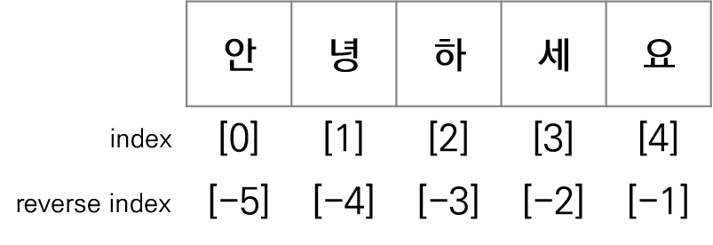

# 문자열 생성
print("안녕하세요")
print('Hello')안녕하세요
Hello\ 기호와 함께 조합해서 사용하는 특수한 문자\" : 큰 따옴표\' : 작은 따옴표\n : 줄 바꿈(new line)\t : 탭(tab)"안녕하세요"라고 말했습니다.
'날씨가 좋다'라고 생각했습니다."안녕하세요"라고 말했습니다.
'날씨가 좋다'라고 생각했습니다.# 여러 줄 문자열 만들기 : 세 번 반복한 따옴표로 감쌈
print("""동해물과 백두산이 마르고 닳도록
하느님이 보우하사 우리나라 만세
무궁화 삼천리 화려강산
대한사람 대한으로 길이 보전하세""")동해물과 백두산이 마르고 닳도록
하느님이 보우하사 우리나라 만세
무궁화 삼천리 화려강산
대한사람 대한으로 길이 보전하세+ : 두 문자열을 연결해서 새로운 문자열 생성* : 문자열을 숫자만큼 반복하여 새로운 문자열 생성 - (예) 문자열*숫자성적은99입니다.[index]를 사용하여 문자열의 특정 위치에 있는 항목(문자)에 접근하는 것[(start index):(stop index)]를 이용하여 문자열의 일부 문자를 추출하는 것
len() 함수 : 문자열에 들어있는 문자의 개수(문자열의 길이) 반환| 함수 | 설명 |
|---|---|
| lower() | 문자열의 알파벳을 모두 소문자로 변환 |
| upper() | 문자열의 알파벳을 모두 대문자로 변환 |
hello python!
HELLO PYTHON!
Hello Python!| 함수 | 설명 |
|---|---|
| find() | - 문자열에서 특정 문자열을 왼쪽에서부터 찾아서 인덱스를 반환 - 찾는 문자열이 없으면 -1을 반환 |
| rfind() | - 문자열에서 특정 문자열을 오른쪽에서부터 찾아서 인덱스를 반환 - 찾는 문자열이 없으면 -1을 반환 |
| count() | - 문자열에서 특정 문자열의 개수를 반환 |
| in 연산자 | - 문자열 내부에 특정 문자열이 있다면 True, 없다면 False를 반환 |
# 문자열 찾기
s = "Hello! Python is Python"
print(s.find("Python"))
print(s.rfind("Python"))
print(s.count("Python"))
print("Hello" in s)
print("Hi" in s)7
17
2
True
False| 함수 | 설명 |
|---|---|
| strip() | 문자열 양 옆의 공백이나 특정 문자를 제거 |
| rstrip() | 문자열 오른쪽의 공백이나 특정 문자를 제거 |
| lstrip() | 문자열 왼쪽의 공백이나 특정 문자를 제거 |
| replace() | 특정 문자열을 다른 문자열로 변경 |
##100kg, ##200
100kg, ##200kg| 함수 | 설명 |
|---|---|
| split() | - 특정문자를 기준으로 문자열을 분리하고 리스트로 반환 |
| join() | - 여러 문자열을 모아서 하나의 문자열로 만듬 - 문자열을 구분할 구분자를 지정해야 함 |
one, two, three
one - two - three| 함수 | 설명 |
|---|---|
| isdigit() | 문자열이 숫자로만 구성되었는지 확인 |
| isalpha() | 문자열이 알파벳으로만 구성되었는지 확인 |
| isalnum() | 문자열이 알파벳과 숫자로만 구성되었는지 확인 |
| islower() | 문자열이 소문자로만 구성되었는지 확인 |
| isupper() | 문자열이 대문자로만 구성되었는지 확인 |
| isspace() | 문자열이 공백으로만 구성되었는지 확인 |
# 문자열 구성 파악
print("1234".isdigit())
print("Python".isalpha())
print("pass123".isalnum())
print("hello".islower())
print("HELLO".isupper())
print(" ".isspace())True
True
True
True
True
True| 함수 | 설명 |
|---|---|
| str() | 수를 문자열로 변환 |
| int() | 정수 형식의 문자열이나 실수를 정수로 변환 |
| float() | 실수 형식의 문자열이나 정수를 실수로 변환 |
“{자료형}”.format(인수)
{}를 포함한 문자열 뒤에 .을 찍고 format() 함수를 사용하여 문자열이 출력되는 형식을 지정할 수 있음
{} 기호가 format() 함수의 매개변수로 차례로 대치되면서 숫자가 문자열이 됨{} 개수와 format() 함수의 매개변수 개수는 반드시 같아야 함format() 함수보다 간단하고 직관적이므로, 대부분 f-문자열을 사용함format() 함수를 사용하는 것이 더 좋은 경우
# format() 함수1
print("{}".format(10))
print("{} {}".format(10, 20))
print("{} {} {} {} {}".format(10, 20, 30, 40, 50))10
10 20
10 20 30 40 50# format() 함수2
name = "홍길동"
age = 20
print(f"이름은 {name}이고, 나이는 {age}입니다.")
print("이름은 {}이고, 나이는 {}입니다.".format(name, age))이름은 홍길동이고, 나이는 20입니다.
이름은 홍길동이고, 나이는 20입니다.# format() 함수3
a = 4
b = 3.14159265
print("20{:02d}".format(a)) # a 값을 두자리로 출력하되 앞의 빈곳은 0으로 채움
print("{:.3f}".format(b)) # b 값을 소수점 이하 세자리로 반올림하여 출력2004
3.142# 데이터를 리스트에 담아서 사용할 때는 format() 함수를 사용하는 것이 더 좋음
data = ["별", 2, "M", "Yes"]
# f-문자열 사용
print(f"이름: {data[0]}, 나이: {data[1]}, 성별: {data[2]}, 중성화 여부: {data[3]}")
# format() 함수 사용
# 전개 연산자 *를 사용하여 리스트 내용을 전개함
print("이름: {}, 나이: {}, 성별: {}, 중성화 여부: {}".format(*data))이름: 별, 나이: 2, 성별: M, 중성화 여부: Yes
이름: 별, 나이: 2, 성별: M, 중성화 여부: Yes